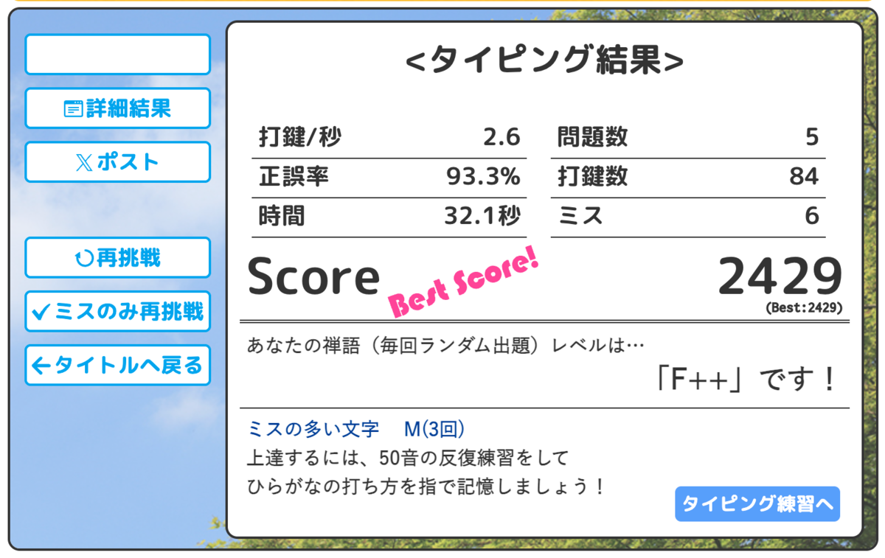
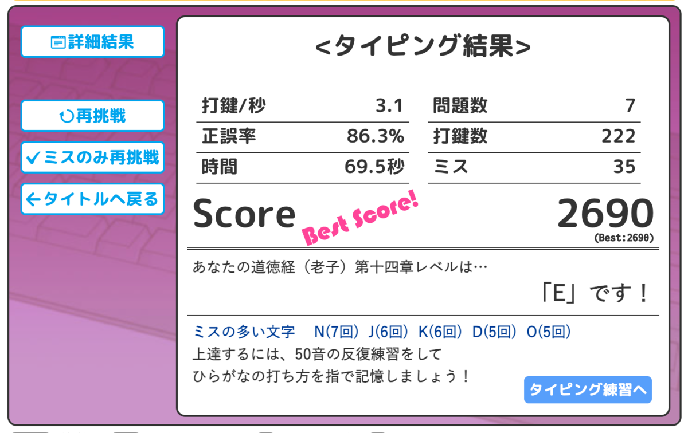

投稿日: 2025/07/27 07:51:08
カテゴリ: キー配列研究
サムネイル: 
一日程度の差なのでこれといって進展があるわけではないけれど、一応記録。
やってて気付いたこととしては、今現在の自分にとってのQWERTYや新下駄配列がそうであるように、熟練しても変わることと変わらないことがあるはず。
JIS配列でいえば、遠いキーに熟練してササッと手が伸びるようになったとして、キーが遠いという事実は変わらない。家や職場と同じで、近づけるには引っ越すか別のお店や手段を見つけるしかない。
新下駄でいえば、熟練して両手でがスムーズに動くようになったとして、両手が毎回複雑に動き続けたり、同時シフトというシンクロをしたり、出現頻度がレアなストロークがあるという事実は変わらない。
親指シフトでいえば、親指と共に打鍵することが熟練によってスムーズになったとして、親指と共に打つという事実は変わらない。
すごく当たり前のことなんだけど、それが配列をあえて選ぶという意味なんだろうなと思う。
ぶっちゃけQWERTYやフリックで全てが事足りるので、自分自身は誰かにあえて新しい配列を勧めるようなことはしないのだけど、きっとあえて選ぶとしたらそういうことなんだろうなと思う。
自分にとってどんなコストなら割いたり目を瞑ることができて、どのコストは下げたいのか、それが選択ということなのかもしれない。
